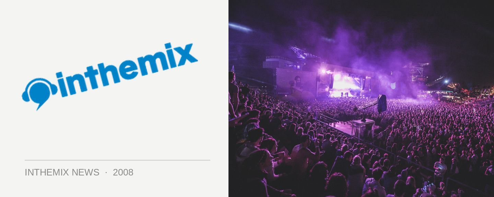

The Roots pull out of Good Vibrations, Q-Tip steps up
In what will bring a tear to the eye of hip hop fans looking forward to next year’s Good Vibrations tour, legendary hip hop act The Roots have pulled out of their high profile slot on the bill. “Due to recently arisen commitments in the US throughout February, and in spite Jam Music’s best efforts to accommodate those commitments, The Roots have had to cancel their spot on the Good Vibrations Festival ’09 tour,” festival organisers Jam Music said in a statement today.
All is not lost though, as they’ve managed to secure a pretty tasty replacement in the form of the legendary A Tribe Called Quest MC Q-Tip, who’s just been announced as the act who’ll be taking the place of The Roots on the lineup. Q-Tip arguably helped establish a high-class blueprint for all other hip hop acts to follow on from with his work with A Tribe Called Quest, but since splitting from the crew in the late 90s has gone onto forge a successful solo that’s seen some memorably collaborations, as well as his recent The Renaissance solo album release.
Stay tuned to ITM’s Festival Page as the Good Vibrations tour in February next year draws closer…
Sat Feb 14 – Sydney, Centennial Park (SOLD OUT)
Sun Feb 15 – Melbourne, Flemington Racecourse
Sat Feb 21 – Gold Coast, Parklands
Sun Feb 22 – Perth, Heirisson Island